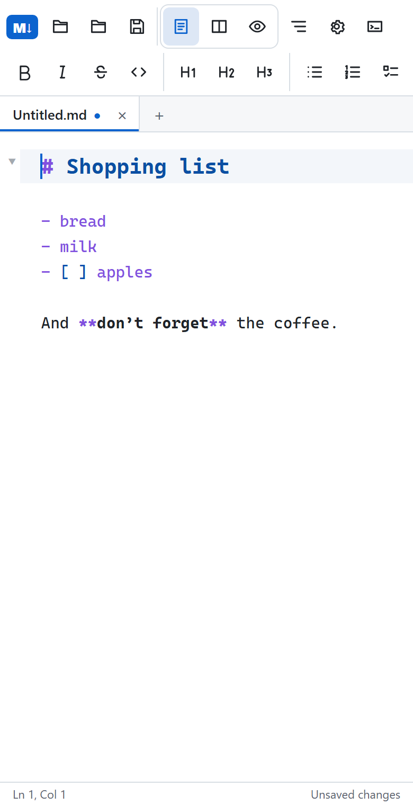
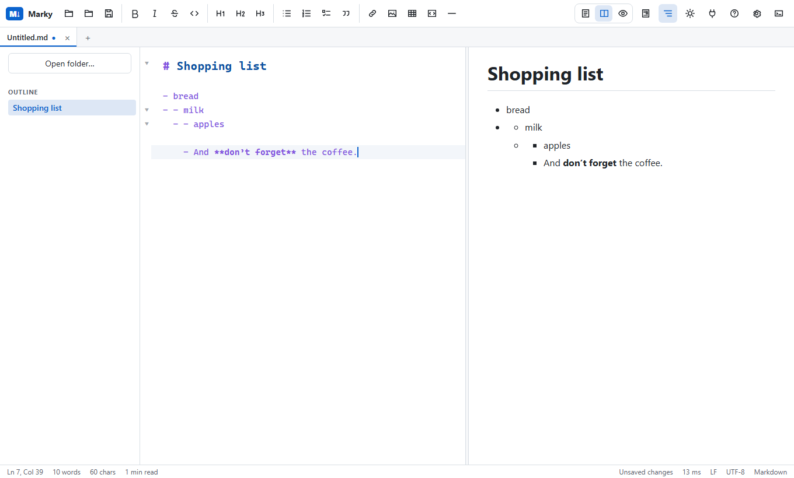
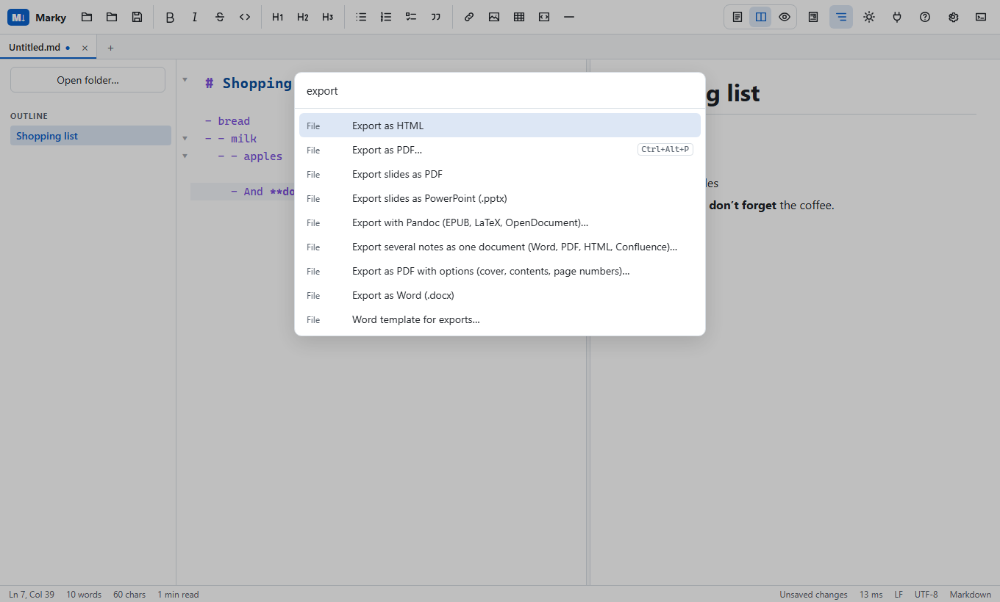

1. Getting started
The desktop app
Download the installer for your system from the releases page:
| System | File |
|---|---|
| Windows | Marky_…_x64-setup.exe (or the .msi for managed installs) |
| macOS | Marky_…_universal.dmg |
| Linux | Marky_…_amd64.AppImage or .deb |
Run it and follow the steps. On Windows, SmartScreen may warn that the installer isn't signed yet: choose More info → Run anyway.
Afterwards Markdown files (.md, .markdown) open in Marky when you double-click them, or with Open with → Marky. The desktop app checks for updates (you can switch that off) and installs them only when you agree; see Settings.
The web app
Open the web app's address in Chrome, Edge, Firefox or Safari. Nothing is installed and nothing about your notes leaves your computer: Marky reads and writes files on your own disk.
- After the first visit the web app also works offline.
- Chrome and Edge can open a whole folder and save straight into it. Other browsers open a read-only copy of a folder and download what you save.
- To give the web app its own window, choose Install Marky in the address bar (Chrome, Edge).
On a phone or tablet
Open the web app in the browser on your phone or tablet and add it to the home screen:
- iPhone and iPad (Safari): the share button, then Add to Home Screen.
- Android (Chrome): the ⋮ menu, then Add to Home screen or Install app.
It then opens full screen, like an app, and works offline.

On a phone the buttons take two rows. Swipe the lower row (formatting) sideways for more, and tap the command palette button, the last one on the top row, for everything else. The sidebar slides over the text and closes when you pick something. A tablet shows the same layout as a computer.
Your first note
- Start Marky. An empty note, Untitled.md, is open.
- Type a heading:
# Shopping list, press Enter, and a list:- bread. Press Enter again and the next-appears by itself. - The preview on the right shows the result as you type.
- Press Ctrl+S to save. Marky asks where; pick a folder and a name.

From now on, Marky keeps a draft of everything you type, even before you save, so nothing is lost if the computer crashes (Your work is safe).
Working with a folder
Most people keep their notes in a folder (or a few). Open one with Open folder (the second button, or Ctrl+Shift+O). The sidebar lists its notes; click one to open it in a tab. Links between notes, search across all of them, tags and the graph all work on the open folder.
Finding any command
Everything Marky can do is in the command palette: press F1 (or Ctrl+Shift+P) and type a few letters of what you want, such as export or table. The palette shows the shortcut next to each command, so you learn them as you go.
